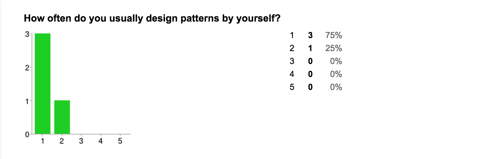
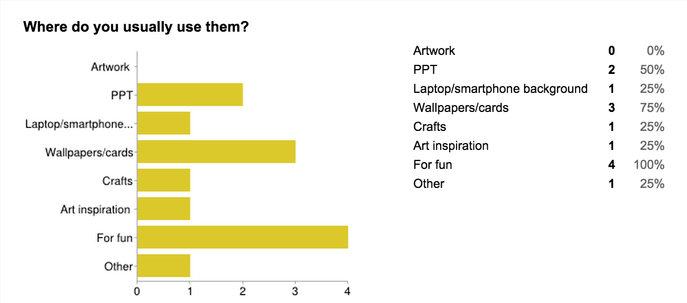
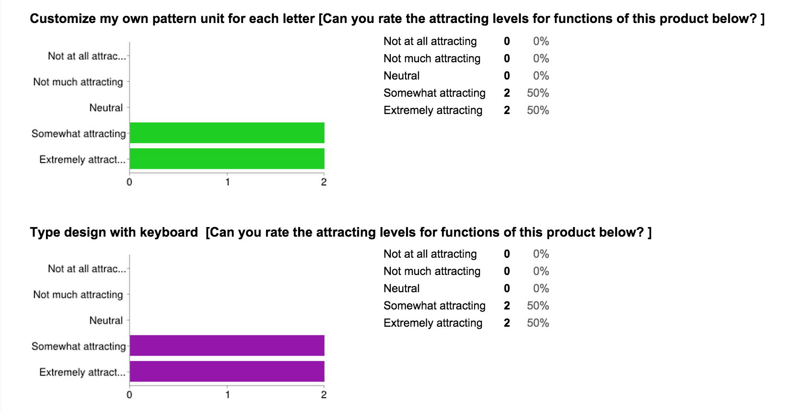

Color Alphabet - A Visual Design and Communicating Tool
Demo Video TurotialsWe were setting out to express words in colors, correlating 26 letters with 26 kinds of color blocks. Our team explored the possible opportunities for it to be commercialized and innovative, and finally, we came up with the idea that allowed people to build multiple patterns simply with typing. Our team included students from different majors: computer science, human-computer interaction, business and media art. The interdisplinary combination gave us a chance to think and solve problems in different aspect.
Competitive Analysis
We conducted Competitive Analysis for Color Alphabet, surveying the existing apps/software/websites in the market that have some similar features with our conceptualized project. There are a lot of graphic design tools that have the feature of designing patterns (like Photoshop, Patterno, Hexels Pro), but none of them use keyboard to conduct a design. Since keyboard is a quick and easy tool and involves with almost no learning curve, we thought it had potentials to be used in simple-and-quick design. In order to validate the hypothesis, our team decided to prototype and test it.
Business Model
We learned how to conducted marketing research on our product. One of our team members has business background and led us analyze and fill out the Business Model Canvas. Throughout the process, we learned who our target customers are, who our partners will be, what our value propositions are, etc.
Design and Prototype
Language: HTML + CSS + JavaScript Platform: Google chrome Functionality: 1. With the virtual keyboard, users can input text in the text area with mouse clicks2. With the color picker, users can assign their preferred color for each letter3. With text box and color panel, users can convert the texts they’ve inputted into corresponding color blocks, so that they can produce a design by manipulating the position and content of their texts. 4. With save button, users can save both their texts and color designs into a PDF document.
Validation(prodcut assessment)
We conducted usability testing with four users all of whom came from Herron Art School. We asked them to finish four tasks with our prototype: copying three types of artworks, creating one artwork. A pre-questionnaire and post-questionnaire were expected to be taken before and after the test. Below are some selected results from the user test.
Positive feedbacks • The interface is concise and clear • Quick, simple, easy, immediate, creative • Kids would have fun to play with it • Good for exploring color combination, doing a 5-minute book/card design • It’s interesting to use
Negative feedbacks • Some format bugs make it hard to design • Design will be lost once the browser is closed accidently • Saving page is not what user would expect, and no feedback after saving successfully • User would always forget to input a return for each line • Repeated work is boring, copy and paste is not easy • There is no way to go back to previous color • Changing colors for multiple letters is troublesome - involving open and close frequently • It’s confusing to change color for a new user - button is mostly clicked • It’s hard to recognize the position for the color blocks
  